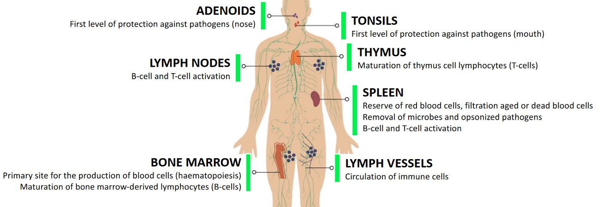
1 Introduction to Antibodies
This chapter covers rudimentary information on antibodies, including but not limited to the kinds found in the human body, their response to pathogens, their interactions, and their structure.
1.1 The Immune System
The human body has numerous tissues and organs that are included in its immune system (i.e., a system that helps fend off pathogens):
Adenoids
This is the first level of protection against pathogens in the nose.
Lymph Nodes
These enable B and T-cell activations
Bone Marrow
This is the site where blood is produced (i.e., haematopoiesis). B-cells also develop here via bone marrow-derived lymphocytes.
Tonsils
This is the first level of protection against pathogens in the mouth.
Thymus
This organ helps T-cells to mature.
Spleen
This acts as a reserve of red blood cells (and also helps filter them). Microbes, opsonized pathogens, and aged or dead red blood cells are also filtered out here.
B and T-cell activation also happens here.
Lymph Vessels
Immune cells are circulated around the body via these.
1.1.1 Innate and Adaptive Immunity
The innate immune system enables “non-self” antigens (e.g., pathogens) to be quickly eliminated. Cells in this system present antigens to activate T-cells (hence supporting antibody response).
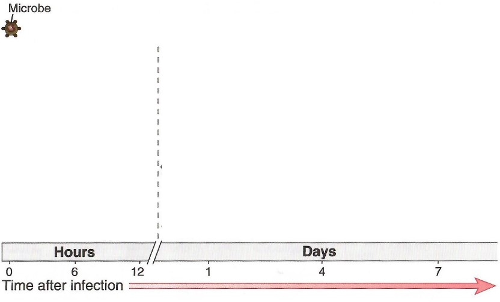
The adaptive immune system has a slow response time (i.e., after the dashed vertical line above) and improves over time. Only via “memory” does this system quickly respond to known antigens.
1.1.2 Main Cells of the Immune System
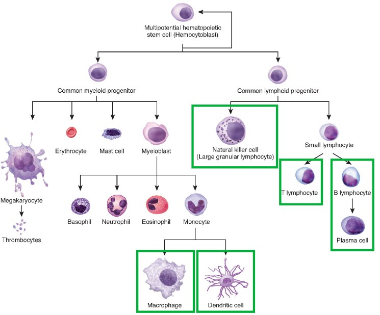
The immune system has many cells, of which include:
Macrophages
These belong to the innate immune system and perform phagocytosis.
These are antigen-presenting cells.
Dendritic Cells
These also belong to the innate immune system and also play a role in phagocytosis, proteolysis, and the presentation of antigens.
These cells also play a role in T-cell activation.
Natural Killer Cells
These belong to the innate immune system. They kill infected or cancer cells.
T-Cells
These belong to the adaptive immune system; they are also specialized in recognizing non-self antigens via T-cell receptors.
There are numerous T-cells with different functions.
B-Cells and Plasma Cells
These are part of the adaptive immune system and play a role in the production of antibodies.
1.1.3 T-Cell Differentiation
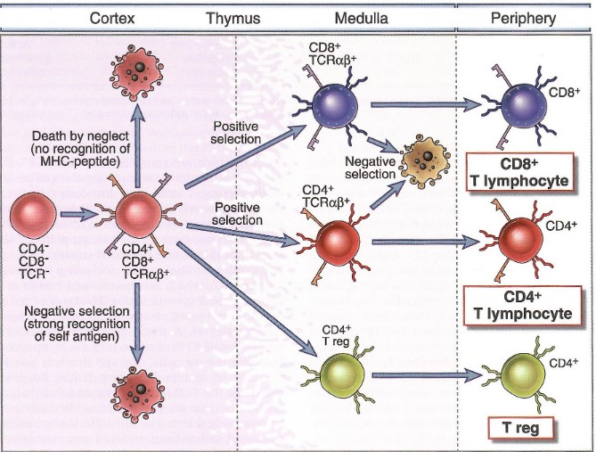
T-cells can differentiate into one of four kinds of T-cells:
CD8+ “Cytotoxic” T-Cells
These kill cells that display a non-self antigen (e.g., an infected / tumor cell).
CD4+ “Helper” T-Cells
These help activate CD8+ T-Cells and also B-Cells.
CD4+ Regulatory Cells (Treg)
These help down-regulate the immune response.
Memory T-Cells
A small portion of T-cells go onto become involved in long-term immune responses.
1.1.4 B-Cell Differentiation
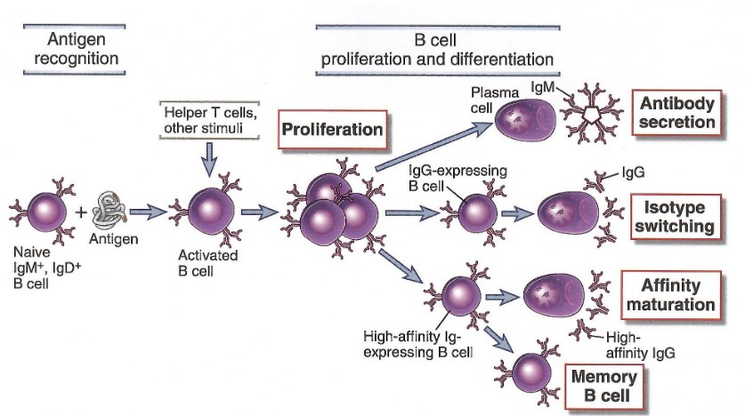
Similarly, B-cells can also go onto mature into one of several different kinds of B-cells:
Naive B-Cells
These are B-cells that display antibodies against different kind of antigens’ surfaces (with about 107 to 108 different kinds of specific surfaces).
Activated B-Cells
This happens when a naive B-cell binds to a specific antigen. This antigen (see above picture) is then displayed on its surface to help recruit CD4+ T-cells.
Plasma B-Cells
These are antibody-producing cells.
IgM - antibodies with a weak affinity and specificity - are produced and secreted. IgG - antibodies with a higher affinity and specificity - are generated in the long run.
Memory B-Cells
These are involved in the long-term immune response to previously-encountered antigens.
IgG-secreting antibodies can also be selected for further differentiation to produce higher-affinity IgGs via a maturation process.
1.2 Immune System Responses
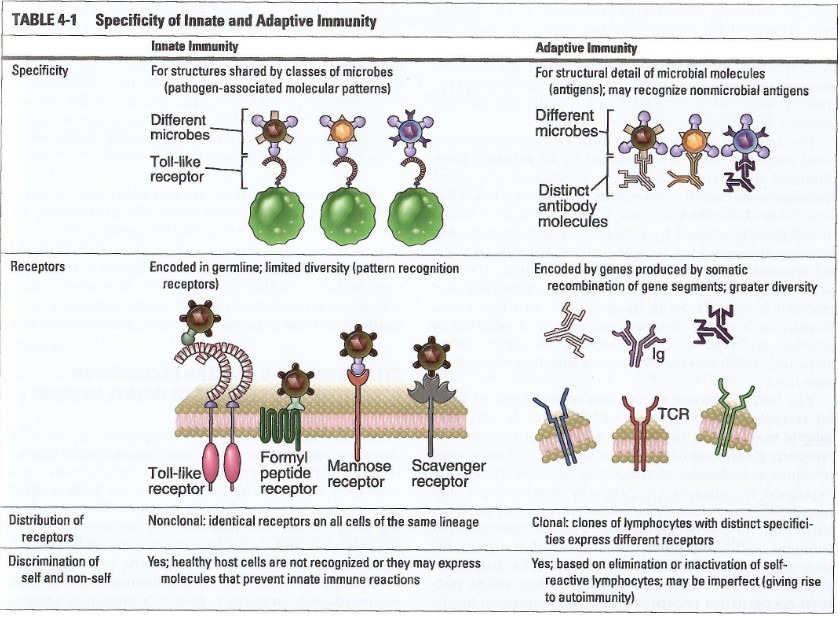
The human body’s innate immune system relies on patterns that are associated with pathogens and cell damage.
The adaptive immune system relies on specialized molecules with high specificities: T-cell receptors (i.e, TCRs) and antibodies.
1.2.1 Antigen-Recognizing Molecules of the Immune System
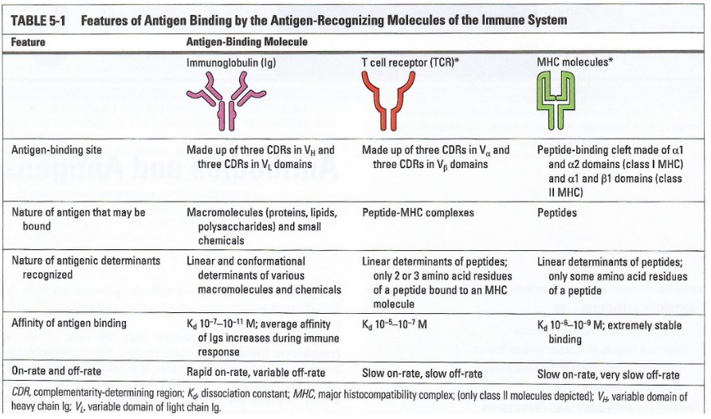
BS4019 covers a few:
MHC molecules
These molecules shows linear peptides on antigen-presenting, infected, or cancerous cells.
T-Cell Receptors
These are receptors that are displayed by T-cells.
These receptors also help recognize linear peptides that are shown by MHC molecules.
Immunoglobins (i.e., Ig / antibodies)
These are secreted by \(\beta\)-cells. Immunoglobins also recognize epitopes of various natures (e.g., proteins, lipids, sugars, etc).
1.2.2 Phases of the Adaptive Immune System
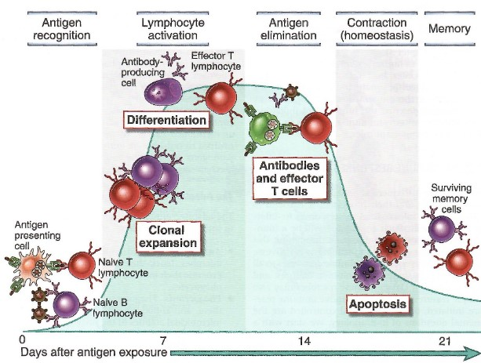
The above figure goes in the following order:
Antigen Recognition
Antigen-presenting cells (e.g., dendritic cells) show an antigen that is recognized by a naive T cell and / or a naive B-cell recognizes an antigen via an antibody on its surface.
Lymphocyte Activation
The specific T-cell is activated and undergoes clonal expansion. The T-cell then differentiates into effector T-cells.
The specific B-cell becomes activated, undergoes clonal expansion, and differentiates into antibody-producing cells.
Antigen Elimination
Cytotoxic T-cells help eliminate infected cells.
Antibodies also block pathogens and recruit innate immune cells (e.g., NK cells) to eliminate pathogens.
Contraction
After pathogens are eliminated, cytotoxic T-cells and antibody-producing B-cells undergo apoptosis (i.e., they kill themselves).
Memory
Memory B and T-cells form - these survive into the long term and rapidly produce antibodies in the case of re-infection.
1.2.2.1 Primary and Secondary Responses to an Infection
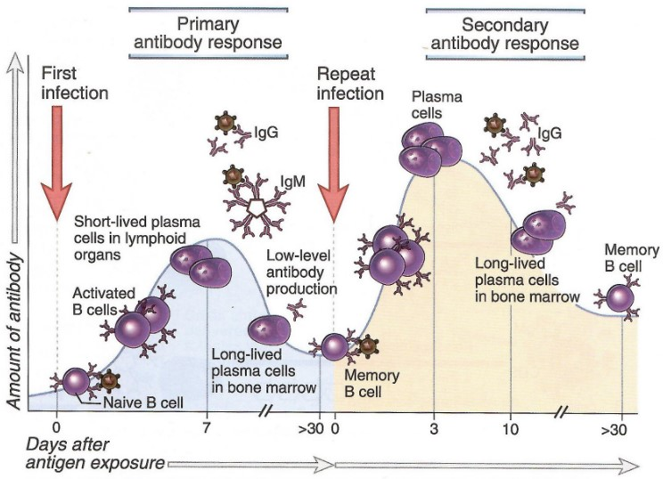
The first response is IgM-rich - because of this, it is relatively weak and non-specific.
The secondary response is IgG-rich - it is stronger and more specific.
1.2.2.2 What are Cytokines?
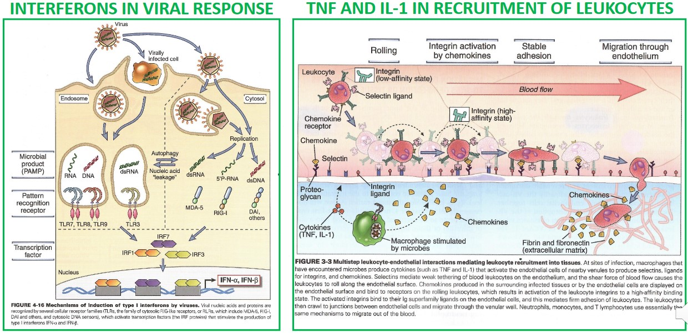
Cytokines are cell signalling molecules that are involved in the innate and adaptive immune systems.
1.3 Parts of an Antibody
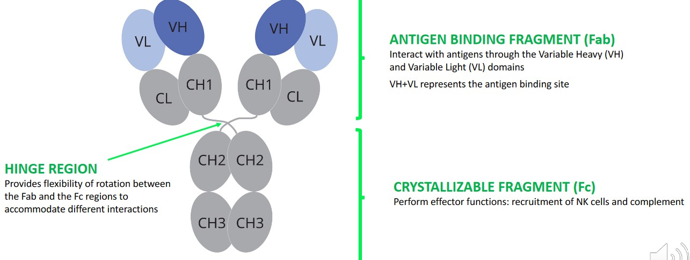
An antibody is a protein that is comprised of antigen-binding and crystallizable fragments.
The antigen binding fragments (Fab) interact with antigens via variable heavy (i.e., VH) and variable light (i.e., VL) domains. Together, The VH and the VL form the antigen binding site.
The crystallizable fragment (Fc) perform effector functions - they help recruit NK and complimentary cells.
The hinge region allows the Fab and Fc regions to rotate and accommodate different interactions.
1.3.1 Light and Heavy Chains
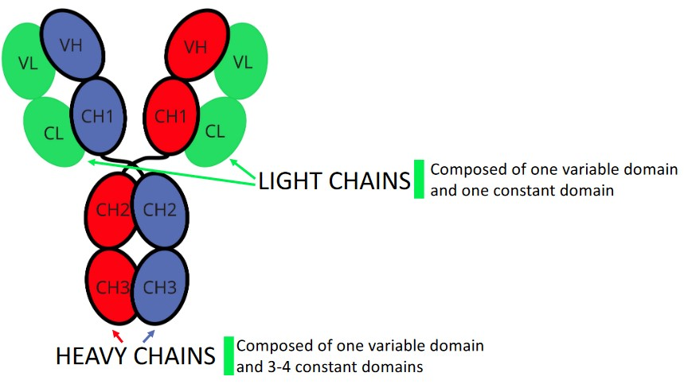
Light chains have one constant and one variable domain.
Heavy chains have one variable domain and three to four constant domains.
1.3.2 Intermolecular and Intramolecular Disulfide Bonds
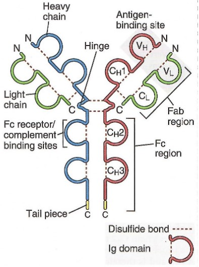
Antibodies are stabliized by inter- and intramolecular disulfide bonds at the following locations:
Intra-Domain Disulfide Bonds
There is one disulfide bond per domain - this contributes to domain stability and fold.
Ch1 - CL Disulfide Bonds
There is one of such bond per Fab. This bond stabilizes the heterodimer between heavy and light chains.
Hinge Region Disulfide Bonds
There are a variable number of these bonds (depending on the antibody in question).
These bonds stabilize IgG dimers.
1.3.3 Antibody Isotypes
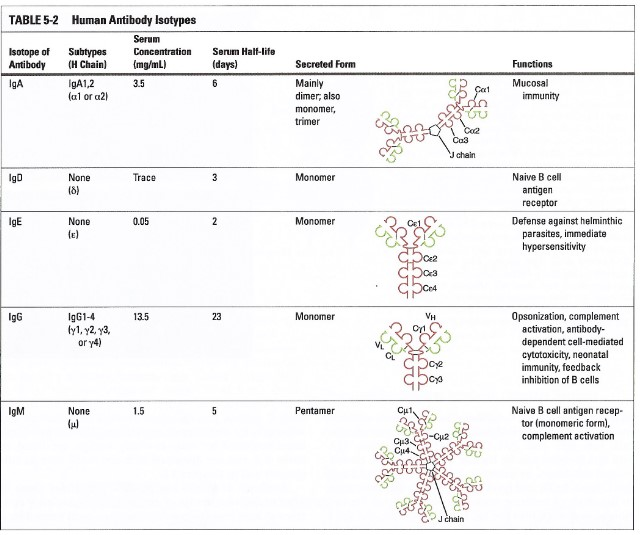
The above table shows the various antibodies that are found in the human body.
IgG antibodies are the preferred format for developing antibodies - these have a fast response time to pathogens, have a high affinity, and a long serum half-life.
IgM antibodies are produced in the early phases of an immune reaction (to pathogens) - these antibodies have weak affinities (which are compensated by a pentameric format). However, they can recruit a complement system.
1.4 Antibody-Antigen Interactions
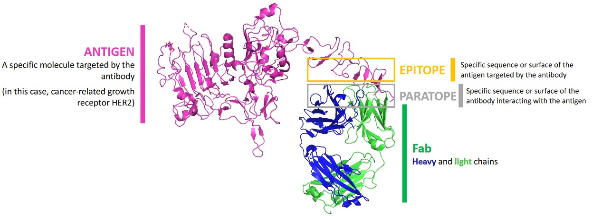
BS4019 uses the following terms:
Antigen
This is a specific molecule that is targeted by an antibody.
Epitope
This is the specific sequence or surface of an antigen that is targeted by an antibody.
Paratope
This is the specific sequence or surface of the antibody that interacts with the antigen.
Fab
These are made out of heavy and light chains.
1.4.1 Complimentary Determining Regions (i.e., CRDs)
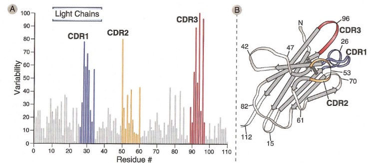
All VH and VL domains carry three CDRs each - each of these CDRs also vary in sequence composition and length.
The CDRs are hypervariable regions that provide specificity.